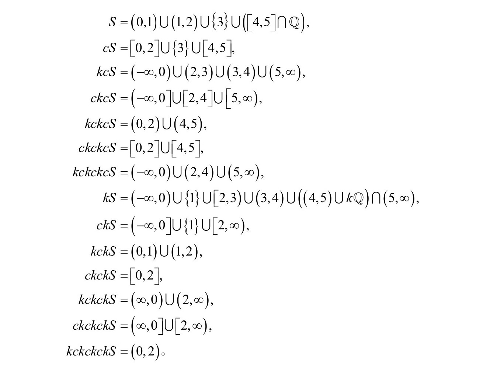

四块重排（第4章）
这四块无法拼成图4.4的新矩形。因为对角线的斜率同时为3/8和5/13，显然不对！
四帽子问题（第4章）
答案是C知道自己的帽子是黑的。怎么知道的呢？他只能看到B的帽子是白的。如果他自己的帽子是白的，D就能看到两顶白帽子从而知道自己的帽子是黑的。既然他没说话——C等了一分钟让他先说——C就知道自己的帽子肯定是黑的。
对这个问题的变体，假设B、C或D中有一人戴黑帽子。由于这一边的其他人看到了有人戴黑帽子，他们就会知道自己的帽子是白的并会马上说出来。如果三人都带的是白帽子，则谁也不会说话，这样过了一分钟后，所有人（包括学生A）就都能知道是A戴的黑帽子。
库拉托夫斯基十四集定理（第7章）
用
表示有理数，集合
可以生成14个不同的闭和补：

趣味数学（第7章）
如果n的每个数字取k次幂，它们的和等于n本身，我们就称n为k自恋数。因此14459929是7自恋数。有4个3自恋数：153、370、371和407。